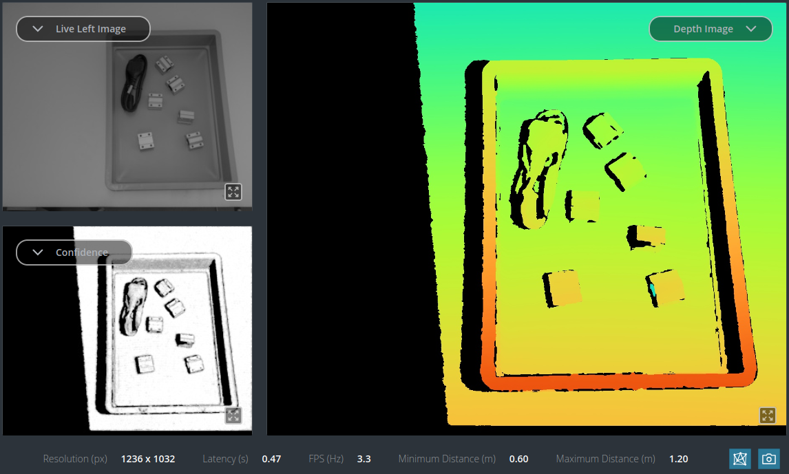
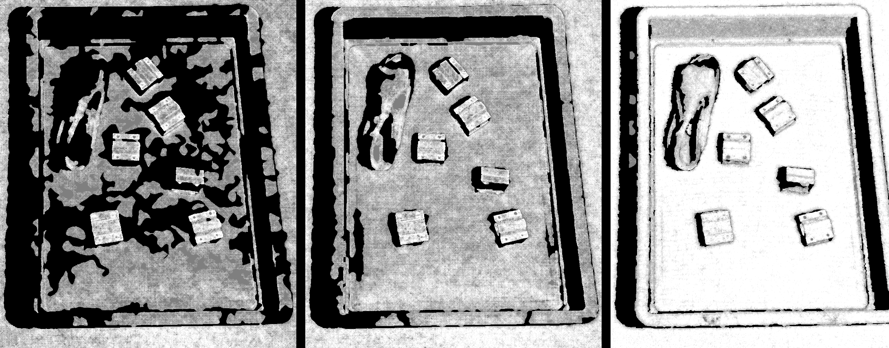

Tuning of depth images¶
Depth images are the source for most rc_reason modules. This tutorial looks into depth image parameter tuning for stereo cameras from Roboception.
In addition to improving the depth image quality, some settings help to reduce the processing time. This tutorial discusses both aspects separately and explains how they influence each other.
Before we start¶
This tutorial focuses on the rc_visard, rc_visard NG and rc_viscore cameras. The cameras may be operated standalone or by an rc_cube or rc_reason_stack as the computing device.
- The Tuning of camera images tutorial must be completed before proceeding with this one.
- The device should have the latest firmware (version 26.07). The firmware version can be verified on the page of the Web GUI.
This tutorial explains how to set the parameters using the Web GUI. The parameters can also be set via GigE Vision 2.0/GenICam image interface and the REST-API interface.
Note
All parameter changes are applied immediately and persist across reboots.
Improving depth image quality¶
The Depth Image page of the Web GUI shows the left camera image, the depth image and the confidence image, and allows the parameters to be changed. Below the images is a line with important values, such as the actual minimum and maximum distance used for stereo matching.


Fig. 5 Live camera image, depth image and confidence image, with status values shown below, as provided on the Depth Image page of the Web GUI.
By default, depth images are computed continuously. However, if the camera is set to software triggering, the acquire button must be pressed to obtain a depth image.
Depth images often contain invalid values, which appear black in the depth image shown in the Web GUI. This occurs in scene parts that are outside the defined working range, as well as on the left side of objects, because there, part of the background is not visible in the right camera image. This effect is called occlusion and is entirely normal.
The depth image quality is best judged by looking at the confidence image: the quality is higher if the image is denser (i.e. has fewer black areas) and if the confidence is high (i.e. white rather than gray).


Fig. 6 The left image shows a sparse, low-confidence image. In the middle image, the result is dense, but the confidence is still low, i.e. gray instead of white. The right image shows a good confidence image, which is both dense and high in confidence.
Ensure proper acquisition¶
Before tuning the actual depth image parameters, it is important to ensure that images are acquired with proper contrast and without overexposure. When using auto exposure (see Tuning of camera images), the Exposure Adaptation Timeout should be increased. This prevents images from being used for stereo matching before the auto exposure has properly adjusted the image brightness. No additional time is taken if the exposure time is already adjusted or if HDR or manual exposure is used. Therefore, it is generally recommended to set this timeout to 1-2 seconds.
Pattern projection¶
Note
The random dot projector is discussed in more detail in a separate tutorial. This section briefly describes the most important steps.
The most effective way to improve depth image quality is to use the random dot projector to ensure proper scene texture. This makes the depth image denser and less noisy. It is useful to acquire depth images in single-shot mode to avoid constant flickering. This is done by selecting Single+Out1 on the depth image page.
If auto exposure is used, it is strongly recommended to set the Auto Exposure Mode on the camera page to AdaptiveOut1. In this mode, the auto exposure ensures that images with projection are not overexposed. However, this can lead to very dark images without projection if the projector is too strong. To determine the optimal strength, set Out1 / Projector on the camera page to ExposureAlternateActive. The Out1 Reduction value below the images then shows how much the auto exposure reduces the brightness because of the projector. Ideally, this value should be between 20% and 30%.
The strength of the projector can be reduced by closing the aperture of the lens.
The rc_viscore additionally allows its strength to be reduced using the Out1 Ratio parameter. This parameter is available on the camera page by expanding the IOControl Settings block.
If the Out1 Reduction value is below 15% while the projector operates at full strength, reducing environmental light should be considered. Otherwise, the projector becomes ineffective.
Even with proper auto exposure settings, the projector can cause overexposure on reflective surfaces. To reduce this effect, the Double-Shot feature on the depth image page can be turned on. It additionally computes a depth image from an image pair without projection and uses it to fill holes.
Parameters for improving quality and accuracy¶
The Double-Shot function is also useful without a projector. In this case, it additionally computes the depth image at a lower resolution to fill holes.
The purpose of the Quality setting is to determine the resolution at which the depth image is computed. The default setting, High, is strongly recommended, as it gives the best results in almost all cases. The settings Medium and Low should only be considered if processing time is an issue. Full can give slightly more accurate data, but despite the much higher processing time, it can lead to less dense depth images, because noise is more pronounced at full image resolution than in downscaled images.
Due to memory limitations, the quality setting Full usually leads to a reduced depth range, depending on the camera and the computing device. If memory is insufficient, the minimum distance used is increased, which is a problem for parts of the scene that are closer than this distance. The minimum distance used is shown below the images on the depth image page. If this minimum distance is larger than desired, it can be reduced by decreasing the Maximum Distance as much as the application allows. If the resulting depth range is then insufficient for the application, the quality has to be reduced to High.
Rarely needed parameters¶
The Static parameter causes several images of a static scene to be collected in order to minimize image noise through averaging. Its effect is very limited, but it significantly increases latency. It is kept mainly for historical reasons.
There are further parameters for smoothing, filling and filtering out small artifacts. It is strongly recommended to keep these parameters at their default settings, as they are beneficial in almost all cases and the additional processing time is negligible.
Note
Smoothing is implemented so that it does not oversmooth discontinuities or fine details. It improves the depth image in almost all situations, and many rc_reason modules rely on smoothed depth images. Therefore, it is strongly recommended to always keep smoothing turned on.
Similarly, filtering the output by a minimum confidence is recommended only in very specific situations, since the rc_reason modules themselves use the confidence image to decide how much to trust each depth pixel. Filtering by the maximum depth error is discouraged.
Reducing processing time¶
The Quality setting has the biggest effect on the processing time, but also the strongest effect on the depth image quality. Therefore, it is suggested to keep this at High unless the options below do not have the desired impact.
If the workspace covers only part of the image, stereo matching can be restricted to this part by selecting a Stereo Region of Interest on the depth image page. After pressing the button, a rectangular region can be selected in the images.
In addition, the Minimum Distance should be increased as much as possible to save computation time. In contrast, decreasing the Maximum Distance has no effect on the computation time, because the computational effort and accuracy are much lower at greater distances.